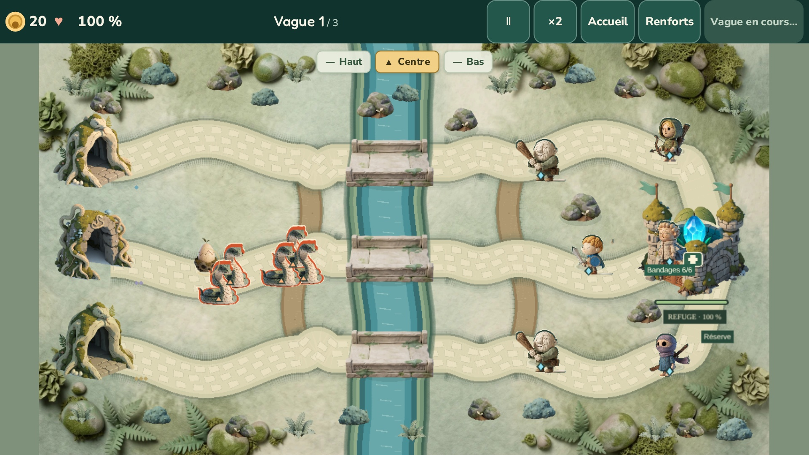
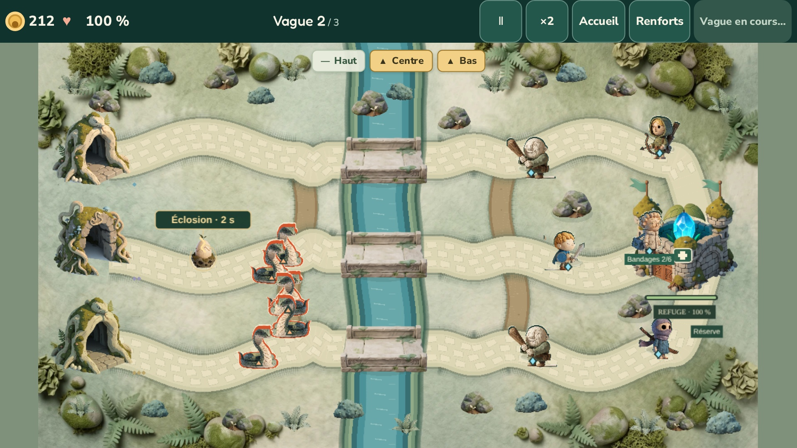
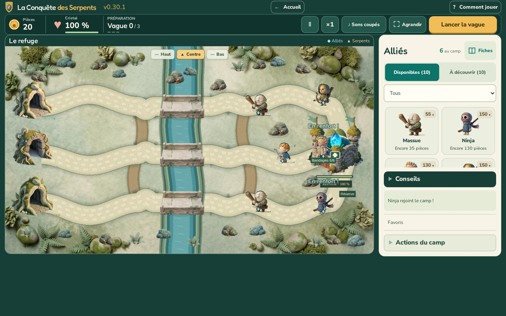

Le jeu actuel reste sans publicité ni achat intégré. Les décisions ci-dessous cadrent la prochaine version. Ce dossier n'est pas une version commerciale publiée.
Le modèle validé
- Jeu gratuit, missions accessibles par la progression normale.
- Au plus une pub entre missions par dix minutes, après au moins deux missions terminées.
- Achats : retirer les pubs et apparences sans avantage au combat.
- Tarifs, produits précis et accès parents à valider avant intégration.
Implémentation proposée : première période de grâce de dix minutes actives ; pas de pub en échec, en réessai ou dans le classique. La publicité non personnalisée peut encore traiter des données.
Captures du jeu actuel
Captures de navigateur sur le build de production, avec un camp initial légal et des commandes normales. À comparer à l'APK avant usage public. Les fiches locales ne traduisent pas encore le jeu.










Version 0.30.1 · SHA du build et des images dans captures.json. Pas de résultat Android physique déduit de ces images.
Ton icône fournie est conservée

Source 2048×2048. Les coins blancs arrondis restent à corriger avant l'export carré 512×512. Ce fichier est une référence, pas l'icône finale du store.
Textes des fiches
Quatre brouillons pour relecture humaine. La langue actuelle de l'application est annoncée dans chaque fiche.
Français — brouillon à relire
La Conquête des Serpents
Défends le cristal sur trois voies avec dinos, dragons et alliés autonomes.
Protège le cristal face aux serpents ! La Conquête des Serpents est un jeu de défense imaginé à partir du jeu d'un enfant. Prépare ton armée puis observe tes alliés agir seuls sur trois voies reliées entre elles. • Recrute des massues, archers, ninjas, soigneurs, petits dinos et bébés dragons. • Anticipe les œufs qui éclosent et les serpents aux pouvoirs différents. • Commence par le refuge : une voie attaquée, puis deux, puis trois. • Découvre six missions et leurs configurations de terrain, d'assaut et de couvée. • Dans la grande aventure, résiste à douze vagues jusqu'au roi à trois têtes et sa garde. • Choisis un nouveau détachement pour chaque mission et conserve ton camp entre ses vagues. • Utilise le miel pour attirer ou ralentir les serpents. • Garde ton aventure sur l'appareil et transfère-la volontairement avec un fichier familial. Les combattants sont autonomes : tu prépares ta défense sans leur donner d'ordres de déplacement. Les cosmétiques prévus ne modifieront aucune statistique de combat. Le jeu est actuellement disponible en français.
English — brouillon à relire
La Conquête des Serpents
Defend the crystal across three lanes with dinosaurs, dragons and brave allies.
Protect the crystal from the snakes! La Conquête des Serpents is a defense game inspired by a child's own game. Prepare your army, then watch your allies act on their own across three interconnected lanes. • Recruit club fighters, archers, ninjas, healers, little dinosaurs and baby dragons. • Watch for hatching eggs and snakes with different abilities. • Start at the refuge: enemies attack one lane, then two, then all three. • Explore six missions with different terrain, assault and nest configurations. • In the long adventure, face twelve waves ending with the three-headed king and his guards. • Prepare a new detachment for each mission and keep your camp between its waves. • Use honey to lure or slow the snakes. • Keep your adventure on the device and transfer it yourself with a family file. Fighters act autonomously: you prepare the defense without issuing movement orders. Planned cosmetics will not change combat statistics. The game is currently available in French.
Deutsch — brouillon à relire
La Conquête des Serpents
Verteidige den Kristall auf drei Wegen mit Dinos, Drachen und mutigen Helfern.
Beschütze den Kristall vor den Schlangen! La Conquête des Serpents ist ein Verteidigungsspiel, das aus der Spielidee eines Kindes entstanden ist. Stelle deine Truppe auf und beobachte, wie deine Verbündeten selbstständig auf drei miteinander verbundenen Wegen kämpfen. • Rekrutiere Kämpfer mit Keulen, Bogenschützen, Ninjas, Heiler, kleine Dinosaurier und Babydrachen. • Achte auf schlüpfende Eier und Schlangen mit unterschiedlichen Fähigkeiten. • Beginne am Zufluchtsort: erst ein angegriffener Weg, dann zwei, dann alle drei. • Entdecke sechs Missionen mit verschiedenen Gelände-, Angriffs- und Nestkonfigurationen. • Bestehe im großen Abenteuer zwölf Wellen bis zum dreiköpfigen König und seiner Leibwache. • Stelle für jede Mission eine neue Truppe zusammen und behalte dein Lager zwischen ihren Wellen. • Locke oder verlangsame Schlangen mit Honig. • Speichere dein Abenteuer auf dem Gerät und übertrage es selbst mit einer Familiendatei. Die Kämpfer handeln selbstständig. Du gibst keine Bewegungsbefehle. Geplante kosmetische Inhalte verändern keine Kampfwerte. Das Spiel ist derzeit auf Französisch verfügbar.
Italiano — brouillon à relire
La Conquête des Serpents
Difendi il cristallo su tre corsie con dinosauri, draghi e alleati autonomi.
Proteggi il cristallo dai serpenti! La Conquête des Serpents è un gioco di difesa nato dall'idea di un bambino. Prepara la tua squadra e osserva gli alleati agire da soli su tre corsie collegate. • Recluta combattenti con la clava, arcieri, ninja, guaritori, piccoli dinosauri e cuccioli di drago. • Controlla le uova che si schiudono e i serpenti con poteri diversi. • Inizia dal rifugio: prima una corsia attaccata, poi due, poi tutte e tre. • Scopri sei missioni con diverse configurazioni del terreno, degli assalti e dei nidi. • Nella grande avventura affronta dodici ondate fino al re a tre teste e alla sua guardia. • Prepara un nuovo gruppo per ogni missione e conserva il campo tra le sue ondate. • Usa il miele per attirare o rallentare i serpenti. • Conserva l'avventura sul dispositivo e trasferiscila volontariamente con un file familiare. I combattenti agiscono in autonomia: prepari la difesa senza dare ordini di movimento. I cosmetici previsti non modificheranno le statistiche di combattimento. Il gioco è attualmente disponibile in francese.
Prochaines décisions et vérifications
- Compte Play, identité publique et contact à préparer puis vérifier.
- Identifiant définitif à confirmer avant toute première publication.
- SDK/version Familles et configuration enfant, permissions et trafic à vérifier.
- Vrais achats de test, vérification, restauration et remboursements à exercer.
- Tarifs et accès parental à valider.
- Politique exacte du SDK choisi, identité et URL publique à finaliser.
- Déclaration Sécurité des données à vérifier avec tous les SDK.
- Tranches d’âge à confirmer.
- Questionnaire IARC à compléter, sans classement inventé.
- Textes des fiches à relire humainement.
- Images et fidélité à l’APK à relire.
- Retest Android physique et relevés à terminer.
- AAB de test signé et contenu à vérifier.
- Test fermé requis par le compte puis accès à la production.
- Icône fournie à corriger et exporter en512×512.
La décision finale appartient au parent et à la Play Console. Le contrôle local n'autorise aucune publication automatique.